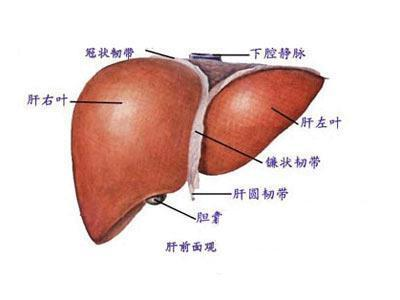
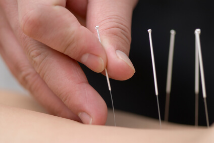
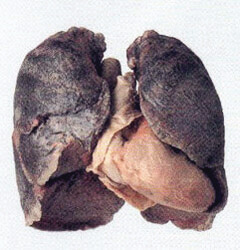
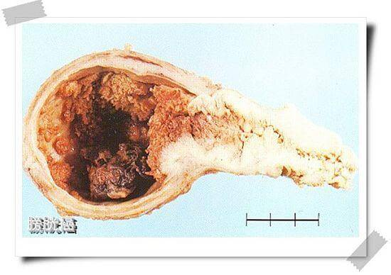
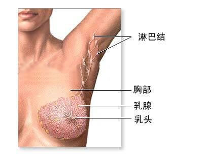
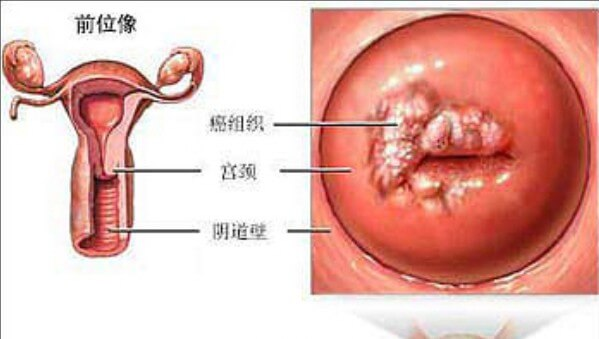
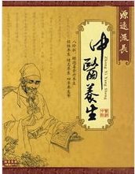

首页
医院概况
医院简介
院长致辞
起源追溯
医院环境
新闻中心
桐君院报
新闻动态
媒体报道
特色诊疗
股骨头坏死
肺瘤
类风湿
肾病综合症
抑郁症
不孕不育
红斑狼症
宫颈癌
胃癌
淋巴瘤
科学研究
科学研究
健康保健
健康保健
中医养生
康复中心
客户心声
联系我们
联系方式
就医指南
北京桐君中医院
在线咨询
网上预约
QQ咨询
医院概况
医院简介
院长致辞
起源追溯
新闻中心
桐君院报
新闻动态
媒体报道
特色诊疗
各类癌症
股骨头坏死
类风湿
肾病综合症
抑郁症
不孕不育
红斑狼症
胃瘤
淋巴瘤
科学研究
健康保健
健康保健
中医养生
康复中心
客户心声
联系我们
联系方式
就医指南
您所在的位置：
主页
>
桐君院报
>

我院的肝癌治疗
肝癌的单纯西医治疗是常说的手术、放疗、化疗、介入，该治疗有一定治疗效果，但副作用大，且治疗效果不明显。 我院采取中医的治疗方案，进行整体调治，着重于扶正培本，有利于提高机体免疫功能，如促进白细胞、单核巨噬细胞数量的增加，加强吞噬功能，促进淋巴母细胞的转化，增加抗体的生成等，这就调动了机体的抗癌因素。
2015-04-02

中医特色疗法--拔罐 针灸 刮痧
针灸、拔罐、刮痧疗法皆为中医外治法中的重要手段，并都以中医针灸学知识为基础，自古以来广泛应用于临床各科疾病的治疗。现代科学研究也在很多方面证实了它们具有良好的临床疗效。
2015-03-30

肺癌早期信号要警惕！
鉴于肺癌的病死率极高，平均5年生存率不到10％，因此，早期发现肺癌，以争取采用以手术为主的综合治疗措施，是提高5年生存率的关键。
2015-03-29

教您从尿液里看膀胱癌征兆
奏的生活环境下，许多人身体没有任何不适，仅仅在小便时发现尿液带血色，觉得是最近“上火”了，以为吃点中药后血尿就会好转。殊不知，这也许是大难临头的征兆！北京桐君中医院权威肿瘤专家林主任提醒，无痛性血尿是泌尿系统肿瘤的危险信号，应尽早去医院做检查查清病因。一旦被查出恶性的膀胱癌，就应该及早治疗，否则不但膀胱保不住，命也可能保不住
2015-03-27

警惕乳腺癌！
乳腺癌是女性最常见的恶性肿瘤之一，近些年来，该病发病率呈逐年上升的趋势，年龄也越来越低龄化。当今社会，虽说女人因独立而更具魅力，但激烈的竞争、繁杂的家务，甚至频繁的应酬等等，都迫使都市女性忙于奔波，常常疏忽了自己的健康，忽略了身体的“报警信号”。北京桐君中医院肿瘤科林经皓主任提醒，女性朋友要关注自身细微变化，警惕乳腺癌。
2015-03-27
无形杀手！——卵巢癌
卵巢癌多发生于围绝经期的妇女。35岁以上者多发卵巢上皮性癌，而35岁以下者多发生生殖细胞类恶性肿瘤。有人将卵巢癌形容为无声的“杀手”
2015-03-27

宫颈癌早期危险信号
绝经后的女性，突然无任何原因又“来潮了”。出血量常不多，而且不伴有腹痛、腰痛等症状，极易被忽视。其实，这种阴道不规则出血常是宫颈癌的早期信号，一定不可忽视！
2015-03-27

中医养生
中医养生，就是指通过各种方法颐养生命、增强体质、预防疾病，从而达到延年益寿的一种医事活动。中医养生重在整体性和系统性，目的是预防疾病，治未病。中医理论的著名代表作品是《黄帝内经》。中医养生来自古代精华医学，当代中医水平有所下降，而古代中医值得后人继续开发和研究。
2014-12-29
权威机构
医院风采